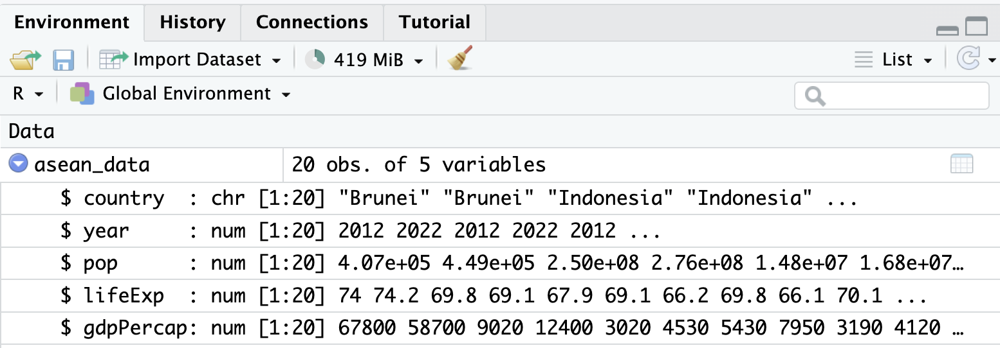
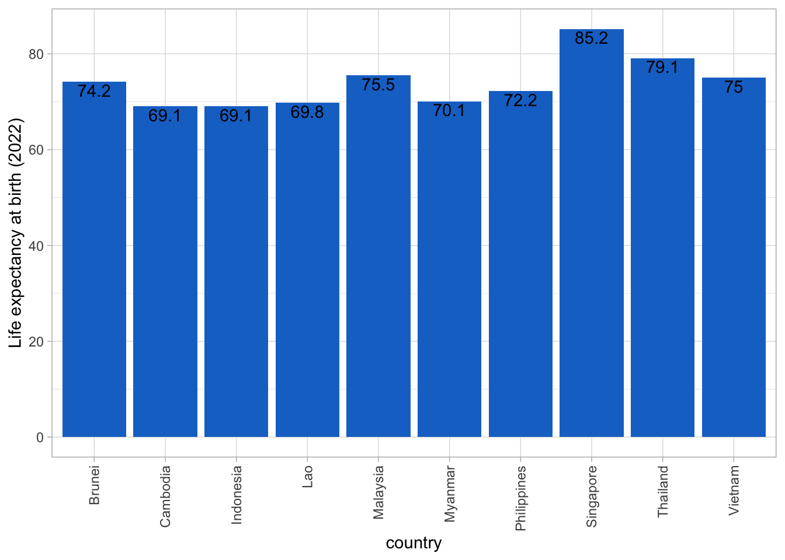
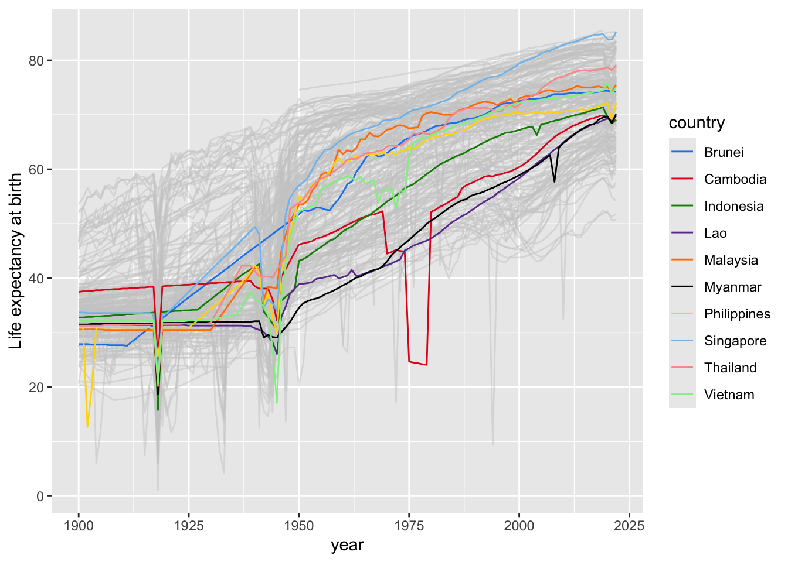

1 + 100[1] 101R is a programming language used by many researchers to analyse data. The aims of these notes are:
In these notes we look at some data on countries around the world based on free material from GAPMINDER.ORG, CC-BY LICENSE.
Some parts of these notes have been taken from parts of a longer course called R for Reproducible Scientific Analysis, and I have made some modifications. The course R for Reproducible Scientific Analysis is Copyright (c) The Carpentries. Here is the license governing the use of the course.
Half-way through writing these notes, I discovered an excellent online book, called R for Non-Programmers: A Guide for Social Scientists. If I had started the notes sooner, I would have copied many more good ideas from this book as well.
To work through the exercises in these notes, you need two pieces of software installed on your computer:
Please make sure that you have the latest versions of these installed. If you have any problems installing these, take a look at the instructions in Chapter 3 of R for Non-Programmers.
Research is a multi-step process: once you’ve designed an experiment and collected data, the real fun begins with analysis! In this section, we look at some of the fundamentals of the R language as well as some best practices for organizing code for research projects that will make your life easier.
Although we could use a spreadsheet in Microsoft Excel or Google sheets to analyze our data, these tools are limited in their flexibility and accessibility. Critically, they also are difficult to share steps which explore and change the raw data, which is key to “reproducible” research.
Therefore, these notes will help you begin exploring your data using R and RStudio. The R program is available for Windows, Mac, and Linux operating systems, and is a freely-available where you downloaded it above. To run R, all you need is the R program.
However, to make using R easier, we will use the program RStudio, which we also downloaded above. RStudio is a free, open-source, Integrated Development Environment (IDE). It provides a built-in editor, works on all platforms (including on servers) and provides many advantages such as integration with version control and project management.
We will begin with raw data, perform exploratory analyses, and learn how to plot results graphically. This example starts with data from gapminder.org, containing yearly statistics for many countries through time. Can you read the data into R? Can you plot the population for Indonesia? Can you calculate the average income for ASEAN countries? By the end of these lessons you will be able to do things like plot the populations for all of these countries in under a minute!
Basic layout
When you first open RStudio, you will see three panels:
Once you open files, such as R scripts, an editor panel will also open in the top left.
Any commands that you write in the R console can be saved to a file to be re-run again. Files containing R code to be ran in this way are called R scripts. R scripts have .R at the ends of their names to let you know what they are.
There are two main ways you can work in RStudio:
Test and play within the interactive R console then copy code into a .R file to run later.
Start writing in a .R file and use RStudio’s short cut keys for the Run command to push the current line, selected lines or modified lines to the interactive R console.
source function.RStudio offers you several ways to run code from within the editor window. To run the current line, you can
1. click on the Run button above the editor panel, or
2. select “Run Lines” from the “Code” menu, or
3. hit Ctrl+Return in Windows or Linux or ⌘+Return on OS X. To run several lines of code (instead of just one), select the lines first and then use one of these 3 methods.
Much of your time in R will be spent in the R interactive console. This is where you will run all of your code, and can be a useful environment to try out ideas before adding them to an R script file.
The first thing you will see in the R interactive session is a bunch of information, followed by a “>” and a blinking cursor. Here you type in commands, R tries to execute them, and then returns a result.
This is the simplest thing you can do with R.
If you type
1 + 100
in the console and press return, it shows the answer (101) with [1] in front of it:
[1] 101
We’ll discuss the [1] later.
If you type an incomplete command, like
3 - (instead of 3 - 2 )
and press return, R will show a
+
to indicate that it is expecting something else. If you want to cancel a command you can hit Esc and RStudio will give you back the > prompt.
From now on in these notes, we’ll show R commands and the results they give like this:
1 + 100[1] 101with the R commands in a grey box and the results in a pale purple box. You can copy the R commands by hovering on the right edge of the grey box and clicking on the clipboard. Don’t just read the commands… copy and paste them into RStudio, run them for yourself, try changing them, and see what happens!
When using R was a calculator, the order of operations is the same as you learned in school. Things are executed in this order:
(, )^ or ** (can use either symbol)* and divide /+ and subtract -For example, compare the difference between
3 + 5 * 2[1] 13and
(3 + 5) * 2[1] 16Large and small numbers, for example the population of China in 2022 (1.43 billion), are written in scientific notation:
1430000000[1] 1.43e+09e+09 is another way of writing for “multiplied by 10 to the power 9” (or *10^9), and 10 to the power 9 is one billion
1.43 * 10^9[1] 1.43e+09R can also do other things you can do with a calculator. For example, to calculate the square-root of 36, type
sqrt(36)[1] 6The command sqrt is known as a function. R has many built in functions: some do maths like sqrt, and some do other things. To call a function, type its name, followed by opening and closing brackets. Some functions take arguments as inputs (things typed inside the brackets). For example sqrt takes a single number as an argument (36 in the example above), and calculates its square root.
Some functions don’t take any arguments:
getRversion() # Check what version of R you are using[1] '4.4.1'getwd() # Check which folder any files will be written in if you decide to save something[1] "/Users/jimstankovich/Documents/GitHub/stats-and-R/introduction_to_R"(Here we have added comments to help explain our R commands. Anything on a line after a # is ignored by R, so it is a good place to write comments.)
Other functions take different types of arguments, for example
paste0(1," dog"," and ","1","2", " cats")[1] "1 dog and 12 cats"This example shows that R works with text as well as numbers.
Don’t worry about trying to remember every function in R. You can look them up on Google, or if you can remember the start of the function’s name, type it and RStudio will provide some suggestions for the end of the name. For example, if you type sq, RStudio will list various functions starting with “sq”, including sqrt().
Typing a ? before the name of a command will open the help page for the command on the bottom right. The help page includes a detailed description of the command and how it works. The bottom of the help page will usually has examples of how to use the command. (This is often the most useful part of the help page!)
A key concept in R, and in any programming language, is to give names to pieces of data. You can give names to single numbers, a bit like x’s and y’s in algebra you did in high school, or to huge tables of data. Any name (like x or y) with something assigned to it is called an r(em2("object")).
The -> symbol is used to assign some data to an object. For example, the command
x <- 9creates an object called x, and sets x equal to 9.
To check what value an object has, just type the name of the object:
x[1] 9Once x has been assigned a value, we can use it for calculations:
x + 3[1] 12sqrt(x)[1] 3x^2 + 2*x + 1[1] 100(x+1)^2[1] 100You can also assign a new value to x
x <- 42
x[1] 42Note that the command x <- 42 changes the value of x, but it doesn’t show us what the new value of x is. The x on the line below asks R to show us the value of x.
You can also change the value of x based on what its previous value was:
x <- x + 1
x[1] 43To interpret the command x <- x + 1, start on the right. x + 1 means take the current value of x (42) and add 1 to it (43). The arrow pointing to the left says: take the new value you calculated on the right (43) and assign it to the thing on the left (x).
If you prefer, you can use longer names for objects that are more informative than x, such as
population_of_thailand_2022 <- 71.7 * 10^6thailandPop22 <- 71.7 * 10^6These names can only include letters, numbers, _, and ., and names must start with a letter. So the following names are invalid:
22pop (cannot start with numbers)thailand pop (cannot have spaces)pop-22 (cannot have a -)If you use long names, you don’t have to type them in full every time. Once RStudio knows that you have created an object called population_of_thailand_2022, it will suggest the full name after you type the first few characters.
Objects can store other types of information, not just numbers. For example, they can store text:
name_of_country <- "Thailand"Objects can also store more than one piece of information, not just a single number or a single piece of text. Two of the most important types of objects in R with multiple pieces of information are vectors and data.frames.
A vector is an object containing a list of things, where everything in list has the same basic data type. For example, everything in the vector can be a piece of text, or everything can be a number.
We can create vectors by using the R function c(), which “combines” or “concatenates” pieces of information. For example, here is a command to create a vector with 10 pieces of information: the names of the 10 ASEAN countries
ASEAN_countries <- c("Brunei","Cambodia","Indonesia",
"Lao","Myanmar","Malaysia","Philippines",
"Singapore","Thailand","Vietnam")
ASEAN_countries [1] "Brunei" "Cambodia" "Indonesia" "Lao" "Myanmar"
[6] "Malaysia" "Philippines" "Singapore" "Thailand" "Vietnam" numbers_less_than_10 <- c(1,2,3,4,5,6,7,8,9)
numbers_less_than_10[1] 1 2 3 4 5 6 7 8 9claims_made_by_Australian_politician <- c(F,F,F,T,F)
claims_made_by_Australian_politician[1] FALSE FALSE FALSE TRUE FALSENote that you can use F and T as abbreviations for FALSE and TRUE.
R has special notation (:) to make lists of consecutive numbers:
numbers_less_than_10 <- 1:9
numbers_less_than_10[1] 1 2 3 4 5 6 7 8 9Note the [6] in the vector ASEAN_countries. This indicates that "Malaysia" is the 6th element of the vector (and the [1] indicates that "Brunei" is the 1st element of the vector). We can use square brackets to refer to individual elements of vectors
ASEAN_countries[6][1] "Malaysia"ASEAN_countries[3][1] "Indonesia"or subsets of vectors
countries_sharing_borders_with_Thailand <- ASEAN_countries[c(2,4:6)]
countries_sharing_borders_with_Thailand[1] "Cambodia" "Lao" "Myanmar" "Malaysia"countries_on_Mekong_River <- ASEAN_countries[c(2,4,5,9,10)]
countries_on_Mekong_River[1] "Cambodia" "Lao" "Myanmar" "Thailand" "Vietnam" Some numerical operations can be applied to vectors of numbers, just as they are applied to individual numbers:
numbers_less_than_10 + 3[1] 4 5 6 7 8 9 10 11 12even_numbers <- numbers_less_than_10 * 2
even_numbers[1] 2 4 6 8 10 12 14 16 18square_numbers <- numbers_less_than_10 * numbers_less_than_10
square_numbers[1] 1 4 9 16 25 36 49 64 81data.frameIf we have 2 or more vectors of the same length, we can join them to make a table of data with multiple columns, one vector in each column, like something you might enter into a spreadsheet. In R, a table of data is called a data.frame. To make a data.frame, lets combine our vector ASEAN_countries with a vector of national dishes:
national_dish <- c("ambuyat", "amok", "gado-gado", "chicken soup", "lahpet", "nasi lemak", "adobo", "laksa", "tom yum goong", "nem")
national_dish [1] "ambuyat" "amok" "gado-gado" "chicken soup"
[5] "lahpet" "nasi lemak" "adobo" "laksa"
[9] "tom yum goong" "nem" We can double-check that the two vectors ASEAN_countries and national_dish have the same length, using a function called length():
length(ASEAN_countries)[1] 10length(national_dish)[1] 10and join the vectors together to make a data.frame, which we’ll call ASEAN_info:
ASEAN_info <- data.frame(ASEAN_countries, national_dish)
ASEAN_info ASEAN_countries national_dish
1 Brunei ambuyat
2 Cambodia amok
3 Indonesia gado-gado
4 Lao chicken soup
5 Myanmar lahpet
6 Malaysia nasi lemak
7 Philippines adobo
8 Singapore laksa
9 Thailand tom yum goong
10 Vietnam nemI would prefer to call the first column (or vector) country instead of ASEAN_countries. So let’s change the name of this column using R’s colnames() function:
colnames(ASEAN_info)[1] "ASEAN_countries" "national_dish" colnames(ASEAN_info)[1] <- "country"
ASEAN_info country national_dish
1 Brunei ambuyat
2 Cambodia amok
3 Indonesia gado-gado
4 Lao chicken soup
5 Myanmar lahpet
6 Malaysia nasi lemak
7 Philippines adobo
8 Singapore laksa
9 Thailand tom yum goong
10 Vietnam nemWe can select individual vectors in our data.frame by writing the vector’s name after the name of the data.frame, separated by $:
ASEAN_info$country [1] "Brunei" "Cambodia" "Indonesia" "Lao" "Myanmar"
[6] "Malaysia" "Philippines" "Singapore" "Thailand" "Vietnam" ASEAN_info$national_dish [1] "ambuyat" "amok" "gado-gado" "chicken soup"
[5] "lahpet" "nasi lemak" "adobo" "laksa"
[9] "tom yum goong" "nem" R can check whether particular statements are TRUE or FALSE. This is very useful for selecting rows of large data.frames meeting particular conditions.
For example, we can check whether
5 > 4[1] TRUEor
sqrt(49) < 7[1] FALSEAs well as the comparisons “greater than” (>) and “less than” (<), we can also make the comparisons
>= (greater than or equal to)<= (less than or equal to)== (equal to)!= (not equal to)These comparisons can be applied to vectors as well as individual variables. The comparisons == (equal to) and != (not equal to) can also be applied to text as well as numbers.
For example
y <- ASEAN_countries != "Singapore"
z <- ASEAN_countries == "Vietnam"
data.frame(ASEAN_info, y, z) country national_dish y z
1 Brunei ambuyat TRUE FALSE
2 Cambodia amok TRUE FALSE
3 Indonesia gado-gado TRUE FALSE
4 Lao chicken soup TRUE FALSE
5 Myanmar lahpet TRUE FALSE
6 Malaysia nasi lemak TRUE FALSE
7 Philippines adobo TRUE FALSE
8 Singapore laksa FALSE FALSE
9 Thailand tom yum goong TRUE FALSE
10 Vietnam nem TRUE TRUEover50 <- square_numbers > 50
data.frame(square_numbers, over50) square_numbers over50
1 1 FALSE
2 4 FALSE
3 9 FALSE
4 16 FALSE
5 25 FALSE
6 36 FALSE
7 49 FALSE
8 64 TRUE
9 81 TRUEAnother useful option of checking whether something is TRUE or FALSE is to use the operator %in%. You can use this to check whether a particular value is in a vector, or which elements of one vector are in another vector. For example
"Brunei" %in% ASEAN_countries[1] TRUE"East Timor" %in% ASEAN_countries[1] FALSEis_square_number <- numbers_less_than_10 %in% square_numbers
data.frame(numbers_less_than_10, is_square_number) numbers_less_than_10 is_square_number
1 1 TRUE
2 2 FALSE
3 3 FALSE
4 4 TRUE
5 5 FALSE
6 6 FALSE
7 7 FALSE
8 8 FALSE
9 9 TRUEWe can use %in% to add a column to our ASEAN_info data.frame, showing which ASEAN countries the Mekong River runs through:
on_Mekong_River <- ASEAN_countries %in% countries_on_Mekong_River
ASEAN_info <- data.frame(ASEAN_info, on_Mekong_River)
ASEAN_info country national_dish on_Mekong_River
1 Brunei ambuyat FALSE
2 Cambodia amok TRUE
3 Indonesia gado-gado FALSE
4 Lao chicken soup TRUE
5 Myanmar lahpet TRUE
6 Malaysia nasi lemak FALSE
7 Philippines adobo FALSE
8 Singapore laksa FALSE
9 Thailand tom yum goong TRUE
10 Vietnam nem TRUEIt is possible to add functions to R by writing a package, or by obtaining a package written by someone else. Packages are sometimes also called libraries. There are over 10,000 packages in a public collection called CRAN (the comprehensive R archive network). R and RStudio have functionality for managing packages:
installed.packages()install.packages("packagename"), where packagename is the package name, in quotes.update.packages()remove.packages("packagename")library(packagename)Packages can also be viewed, loaded, and detached in the Packages tab of the lower right panel in RStudio. Clicking on this tab will display all of the installed packages with a checkbox next to them. If the box next to a package name is checked, the package is loaded and if it is empty, the package is not loaded. Click an empty box to load that package and click a checked box to detach that package.
Packages can be installed and updated from the Package tab with the Install and Update buttons at the top of the tab.
Below we will discuss 3 packages with some very useful functions:
dplyr for working with data.frames and managing datareadr for loading datasets into R from spreadsheetsggplot2 for making graphsBut before we can use these packages, we need to install them.
readr packageLet’s load a small CSV file with some Gapminder data for 10 ASEAN countries. We will use the package readr to do this.
I have put the CSV file on the internet here:
https://github.com/jimstankovich/stats-and-R/blob/main/asean_data.csv
There are two ways you can load the data into R. You can either download it onto your computer first (Method 1), or you can load it into R directly from the website.
Go to the URL (website) above.
Hover on the little arrow pointing down on the right. The words “Download raw file” will appear in a black box.
Click on this arrow to download the CSV file.
Find where the file was downloaded on your computer, and move it to a folder where you want to keep it.
In the “Files” window of RStudio (bottom right), navigate to the folder where you put the data, select the file, and choose “Import Dataset…” 
A new window appears, giving you some options to control how you open the file. In this case the default settings are fine… you don’t need to change anything. So just click “Import” on the bottom right to load the data. Note that the 3 R commands which will be run appear in a box on the bottom right.
These 3 commands run in the Console window on the bottom left. The folder in the second line will be different on your computer (not the same as ~/Documents/Research Methodology in Social Sciences/introduction_to_R/data/), depending on where you put the file asean_2022_data.csv.
Copy these 3 commands to your .R file so you can run them automatically next time, without having to open windows and click in them. This makes your analysis more “reproducible”.
Let’s have a look at the 3 commands and what they do:
library(readr): The library() function makes the package readr available for use (as discussed in Section 2.8 above).
asean_data <- read_csv("[path_to_folder]/asean_data.csv"): The function read_csv is part of the readr package. Here it reads the CSV file asean_data.csv into R’s memory and gives it the name asean_data. (We could call it something else if we wanted to.) Some information appears in the Console window about the data. The country column has text information (character or “chr” for short). The other 4 columns (year, pop, lifeExp, gdpPercap) have numerical information (stored as “double-precision” numbers, or “dbl” for short… don’t worry about this computer science terminology if you haven’t heard it before).
View(asean_data): This command opens a spreadsheet-style view of the data on the top-left. If you close this window the data is stored in R… it is just a “view” of the data.When you load the data, asean_data also appears in the “Environment” window on the top-right. If you click the little blue arrow, it provides some information on the variables in the data:

In summary, 3 of the 4 windows in RStudio are showing similar information about the data we have just loaded. :) It is up to you to decide which way(s) of looking at the data are most helpful.
Yet another way to look at the data is to type the name of the dataset in the Console window:
asean_data# A tibble: 20 × 5
country year pop lifeExp gdpPercap
<chr> <dbl> <dbl> <dbl> <dbl>
1 Brunei 2012 407000 74 67800
2 Brunei 2022 449000 74.2 58700
3 Indonesia 2012 250000000 69.8 9020
4 Indonesia 2022 276000000 69.1 12400
5 Cambodia 2012 14800000 67.9 3020
6 Cambodia 2022 16800000 69.1 4530
7 Lao 2012 6510000 66.2 5430
8 Lao 2022 7530000 69.8 7950
9 Myanmar 2012 50200000 66.1 3190
10 Myanmar 2022 54200000 70.1 4120
11 Malaysia 2012 29700000 74.8 21700
12 Malaysia 2022 33900000 75.5 28300
13 Philippines 2012 98000000 70.7 6300
14 Philippines 2022 116000000 72.2 8580
15 Singapore 2012 5380000 83.3 82900
16 Singapore 2022 5980000 85.2 108000
17 Thailand 2012 69200000 77.7 15100
18 Thailand 2022 71700000 79.1 17500
19 Vietnam 2012 89300000 73.5 6950
20 Vietnam 2022 98200000 75 11400Starting at the same URL as before (https://github.com/jimstankovich/stats-and-R/blob/main/asean_data.csv), click on the word “Raw” on the top right. This takes you take another webpage with the “raw” (unformatted) CSV data. You can use the read_csv command to load the data from this webpage:
library(readr)
asean_data <- read_csv("https://raw.githubusercontent.com/jimstankovich/stats-and-R/main/asean_data.csv")Method 2 is fine for the small dataset we are looking at here. However, if you are running your R commands many times and working with a large dataset, it is better to download the dataset onto your computer first (Method 1), rather than downloading a large dataset many times.
asean_dataI use the dplyr package more than any other packages. It is very useful for managing datasets: cleaning them, joining them, and extracting smaller sections for statistical analysis.
Let’s have a look at how a few dplyr functions can be used to work with the asean_data we have just loaded.
Suppose we want to know the total population of the 10 ASEAN countries in 2022. We can do this by adding up the values of pop in the rows from 2022. Let’s do this in 2 steps
pop.For step 1, dplyr has a command called filter() for selecting particular rows of a dataset. The filter() command takes two arguments
library(dplyr)
Attaching package: 'dplyr'The following objects are masked from 'package:stats':
filter, lagThe following objects are masked from 'package:base':
intersect, setdiff, setequal, unionasean_2022 <- filter(asean_data, year == 2022)
asean_2022# A tibble: 10 × 5
country year pop lifeExp gdpPercap
<chr> <dbl> <dbl> <dbl> <dbl>
1 Brunei 2022 449000 74.2 58700
2 Indonesia 2022 276000000 69.1 12400
3 Cambodia 2022 16800000 69.1 4530
4 Lao 2022 7530000 69.8 7950
5 Myanmar 2022 54200000 70.1 4120
6 Malaysia 2022 33900000 75.5 28300
7 Philippines 2022 116000000 72.2 8580
8 Singapore 2022 5980000 85.2 108000
9 Thailand 2022 71700000 79.1 17500
10 Vietnam 2022 98200000 75 11400Lot’s of dplyr functions take the name of the data.frame as the first argument. There is an alternative notation for running these functions, where you put the name of the data.frame before the function, then join it to the function using the symbol %>%
library(dplyr)
asean_2022 <- asean_data %>%
filter(year == 2022)
asean_2022# A tibble: 10 × 5
country year pop lifeExp gdpPercap
<chr> <dbl> <dbl> <dbl> <dbl>
1 Brunei 2022 449000 74.2 58700
2 Indonesia 2022 276000000 69.1 12400
3 Cambodia 2022 16800000 69.1 4530
4 Lao 2022 7530000 69.8 7950
5 Myanmar 2022 54200000 70.1 4120
6 Malaysia 2022 33900000 75.5 28300
7 Philippines 2022 116000000 72.2 8580
8 Singapore 2022 5980000 85.2 108000
9 Thailand 2022 71700000 79.1 17500
10 Vietnam 2022 98200000 75 11400I think this notation makes it clearer that we are starting with the asean_data data.frame, then applying the filter() function to make changes to it and produce asean_2022.
The %>% notation is particularly good when you want to apply several functions to a data.frame. Below are two pieces of code that do the same thing… which do you think is easier to read?
large_wealthy_country <-
filter(filter(filter(asean_data, year == 2022),
gdpPercap > 20000), pop > 10e6) # 10e6 is 10 million
large_wealthy_country# A tibble: 1 × 5
country year pop lifeExp gdpPercap
<chr> <dbl> <dbl> <dbl> <dbl>
1 Malaysia 2022 33900000 75.5 28300large_wealthy_country <- asean_data %>%
filter(year == 2022) %>%
filter(gdpPercap > 20000) %>%
filter(pop > 10e6) # 10e6 is 10 million
large_wealthy_country# A tibble: 1 × 5
country year pop lifeExp gdpPercap
<chr> <dbl> <dbl> <dbl> <dbl>
1 Malaysia 2022 33900000 75.5 28300Now we can use the sum() function to add up the values of pop in asean_2022:
asean_pop_2022 <- sum(asean_2022$pop)
asean_pop_2022[1] 680759000So the total population of the ASEAN countries in 2022 was nearly 681 million. The function sum() is part of “base R”… you don’t need to load dplyr to use it.
Suppose we want to calculate the average GDP (Gross Domestic Product) per person, averaged across all 681 million people living in ASEAN countries. (If you are interested, the GDP figures in this dataset are in 2017 (inflation-adjusted) US dollars at purchasing power parity)
Here are the steps for calculating average GDP:
Total GDP for each country is equal to the country’s population multiplied by GDP per person (per capita). Let’s add a total_gdp column to the asean_2022 data.frame using a dplyr command called mutate():
asean_2022 <- asean_2022 %>%
mutate(gdp = pop * gdpPercap)
asean_2022# A tibble: 10 × 6
country year pop lifeExp gdpPercap gdp
<chr> <dbl> <dbl> <dbl> <dbl> <dbl>
1 Brunei 2022 449000 74.2 58700 26356300000
2 Indonesia 2022 276000000 69.1 12400 3422400000000
3 Cambodia 2022 16800000 69.1 4530 76104000000
4 Lao 2022 7530000 69.8 7950 59863500000
5 Myanmar 2022 54200000 70.1 4120 223304000000
6 Malaysia 2022 33900000 75.5 28300 959370000000
7 Philippines 2022 116000000 72.2 8580 995280000000
8 Singapore 2022 5980000 85.2 108000 645840000000
9 Thailand 2022 71700000 79.1 17500 1254750000000
10 Vietnam 2022 98200000 75 11400 1119480000000Then we can add up total_gdp across countries using the sum() function again:
asean_gdp_2022 = sum(asean_2022$gdp)
asean_gdp_2022[1] 8.782748e+12and calculate
asean_gdp_per_capita_2022 <- asean_gdp_2022 / asean_pop_2022
asean_gdp_per_capita_2022[1] 12901.41Here is some dplyr code that starts with our original CSV file (asean_data), and generates a summary of the 2022 population and GDP statistics for the whole of ASEAN.
asean_2022_summary <- asean_data %>%
filter(year == 2022) %>%
mutate(gdp = pop * gdpPercap) %>%
summarise(
pop = sum(pop),
total_gdp = sum(gdp),
gdpPercap = total_gdp / pop)
asean_2022_summary# A tibble: 1 × 3
pop total_gdp gdpPercap
<dbl> <dbl> <dbl>
1 680759000 8782747800000 12901.It uses filter() and mutate() in the same way we’ve seen before. There is also a new command summarise().
If we wanted these statistics for both 2012 and 2022, we could remove the filter() function, keep data for both year, and instead apply another function group_by() before summarise(), to generate summaries for both years at the same time.
asean_gdp_summary <- asean_data %>%
mutate(gdp = pop * gdpPercap) %>%
group_by(year) %>%
summarise(
pop = sum(pop),
total_gdp = sum(gdp),
gdpPercap = total_gdp / pop)
asean_gdp_summary# A tibble: 2 × 4
year pop total_gdp gdpPercap
<dbl> <dbl> <dbl> <dbl>
1 2012 613497000 5896224900000 9611.
2 2022 680759000 8782747800000 12901.I don’t think the total_gdp column is very useful… trillions of dollars seem to big to understand. We can select columns to keep using another dplyr command, select():
asean_gdp_summary %>%
select(year, pop, gdpPercap)# A tibble: 2 × 3
year pop gdpPercap
<dbl> <dbl> <dbl>
1 2012 613497000 9611.
2 2022 680759000 12901.Or we can exclude particular columns by putting a - in front of their names:
asean_gdp_summary %>%
select(-total_gdp)# A tibble: 2 × 3
year pop gdpPercap
<dbl> <dbl> <dbl>
1 2012 613497000 9611.
2 2022 680759000 12901.Maybe you’re more interested in health than money. If so, you could modify these calculations to calculate average life expectancy across ASEAN countries instead of per capita GDP. All that you need to change is, instead of multiplying per capita GDP by population, multiply life expectancy by population to give “life expectancy times population”, or “letp” for short.
asean_lifeExp <- asean_data %>%
mutate(letp = pop * lifeExp) %>%
group_by(year) %>%
summarise(
pop = sum(pop),
letp = sum(letp),
lifeExp = letp / pop) %>%
select(-letp)
asean_lifeExp# A tibble: 2 × 3
year pop lifeExp
<dbl> <dbl> <dbl>
1 2012 613497000 71.3
2 2022 680759000 72.1ggplot2 packageI have to confess: I find this package hard to use…
https://r-graph-gallery.com/218-basic-barplots-with-ggplot2.html
http://www.sthda.com/english/wiki/ggplot2-title-main-axis-and-legend-titles
https://stackoverflow.com/questions/15629192/making-a-bar-chart-in-ggplot-with-vertical-labels-in-x-axis
https://www.r-bloggers.com/2021/09/adding-text-labels-to-ggplot2-bar-chart/
library(ggplot2)
ggplot(asean_2022, aes(x=country, y=lifeExp)) +
geom_bar(fill = "dodgerblue3", stat = "identity") +
ylab("Life expectancy at birth (2022)") +
geom_text(aes(label = lifeExp, vjust = 1.2)) +
theme_light() +
theme(axis.text.x=element_text(angle=90,hjust=1,vjust=0.5))
https://rpubs.com/dvdunne/ggplot_two_bars
library(ggplot2)
ggplot(asean_data, aes(x=country, y=lifeExp, fill=year)) +
geom_bar(stat = "identity", position = "dodge") +
ylab("Life expectancy at birth") +
theme_light() +
theme(axis.text.x=element_text(angle=90,hjust=1,vjust=0.5))This is not what we want! Need to convert year to a categorical variable (called a factor in R)
asean_data <- asean_data %>%
mutate(year = as.factor(year))
ggplot(asean_data, aes(x=country, y=lifeExp, fill=year)) +
geom_bar(stat = "identity", position = "dodge") +
ylab("Life expectancy at birth") +
theme_light() +
theme(axis.text.x=element_text(angle=90,hjust=1,vjust=0.5))life_exp_table <- asean_data %>%
arrange(year) %>%
group_by(country) %>%
summarise(
le2012 = first(lifeExp),
le2022 = last(lifeExp),
le_change = le2022 - le2012)https://ggplot2.tidyverse.org/reference/lims.html
library(ggplot2)
ggplot(life_exp_table, aes(x=country, y=le_change)) +
geom_bar(fill = "dodgerblue3", stat = "identity") +
ylab("change in life expectancy (years), 2012 -> 2022") +
geom_text(aes(label = round(le_change,1), vjust = -1)) +
theme_light() +
theme(axis.text.x=element_text(angle=90,hjust=1,vjust=0.5)) +
ylim(-1, 4.5)big_gapminder_dataset <- read_csv("~/Documents/Research Methodology in Social Sciences/introduction_to_R/data/big_gapminder_dataset.csv",
show_col_types = FALSE)
lifeExp_since_1900 <- big_gapminder_dataset %>%
filter(year >= 1900 & year <= 2022) %>%
select(country, continent, year, lifeExp) %>%
mutate(asean = country %in% ASEAN_countries)
asean_lifexp_since_1900 <- lifeExp_since_1900 %>%
filter(asean == TRUE)
other_countries <- lifeExp_since_1900 %>%
filter(asean == FALSE)
# Palette good for people who are colour-blind
# https://stackoverflow.com/questions/9563711/r-color-palettes-for-many-data-classes
colours1 <- c("#88CCEE", "#CC6677", "#DDCC77", "#117733",
"#332288", "#AA4499", "#44AA99", "#999933",
"#882255", "#661100")
# Another palette from top of the same chat
colours2 <- c(
"dodgerblue2", "#E31A1C", # red
"green4",
"#6A3D9A", # purple
"#FF7F00", # orange
"black", "gold1",
"skyblue2", "#FB9A99", # lt pink
"palegreen2")
ggplot(data = asean_lifexp_since_1900, mapping = aes(x=year, y=lifeExp, group=country, color=country)) +
geom_line() +
scale_color_manual(values = colours2) +
ylab("Life expectancy at birth")# https://stackoverflow.com/questions/40297206/overlaying-two-plots-using-ggplot2-in-r
ggplot(data = other_countries,
mapping = aes(x=year, y=lifeExp, group=country)) +
geom_line(col = rgb(0.8,0.8,0.8,0.5)) +
geom_line(data = asean_lifexp_since_1900,
mapping = aes(x=year, y=lifeExp, group=country,
color=country)) +
scale_color_manual(values = colours2) +
ylab("Life expectancy at birth")
asean_2022 %>%
ggplot(aes(x=gdpPercap, y=lifeExp)) +
geom_point(col = "dodgerblue", size = 3) +
xlab("GDP per capita, 2022 (purchasing power parity, 2017 US dollars)") +
ylab("life expectancy at birth, 2022") +
theme_light()(sometimes called a bubble plot)
https://www.datanovia.com/en/blog/how-to-remove-legend-from-a-ggplot/
asean_2022 %>%
ggplot(aes(x=gdpPercap, y=lifeExp, size=pop)) +
geom_point(col = "dodgerblue", alpha=0.5) +
scale_size(range = c(2, 24), name="Population") +
scale_x_log10(limits = c(2500, 170000)) +
ylim(65,87) +
xlab("GDP per capita, 2022 (purchasing power parity, 2017 US dollars)") +
ylab("life expectancy at birth, 2022") +
geom_text(aes(x=gdpPercap, y=lifeExp, label = country, size = 5*10^6, vjust = -1)) +
theme_light() +
theme(legend.position = "none")Make a rough match of the plot at https://www.gapminder.org/tools/
big_gapminder_dataset <- read_csv("~/Documents/Research Methodology in Social Sciences/introduction_to_R/data/big_gapminder_dataset.csv",
show_col_types = FALSE)
world_2022 <- big_gapminder_dataset %>%
filter(year == "2022") %>%
filter(country != "Monaco") %>%
arrange(desc(pop))
world_2022 %>%
ggplot(aes(x=gdpPercap, y=lifeExp, size=pop, col=continent)) +
geom_point(alpha=0.5) +
scale_size(range = c(.1, 24), name="Population") +
scale_x_continuous(trans='log10') +
guides(size = "none") +
theme_light() +
xlab("GDP per capita, 2022 (purchasing power parity, 2017 US dollars)") +
ylab("life expectancy at birth, 2022")# Reproduce the hover feature with the plotly package
# and match the continent colours more closely
library(plotly)
continent_colours <- data.frame(
continent = c("Africa", "Americas", "Asia", "Europe"),
colour = c("rgba(95,210,230,1)", "rgba(154,231,71,1)",
"rgba(237,100,117,1)", "rgba(251,230,77,1)")
)
# Plotly doesn't handle rows with missing data as well as ggplot2
# Remove these rows explicitly...
world_2022v2 <- world_2022 %>%
filter(!is.na(lifeExp) & !is.na(gdpPercap) & !is.na(pop)) %>%
left_join(continent_colours)
#https://plotly.com/r/bubble-charts/
fig <- plot_ly(world_2022v2, x = ~gdpPercap, y = ~lifeExp, text = ~country,
type = "scatter", mode = "markers",
marker = list(size = ~(sqrt((pop)/300000)+0.2),
opacity = 0.8, color = ~colour))
#https://plotly.com/r/figure-labels/
fig <- fig %>%
layout(fig,
title = "2022 Gapminder data",
xaxis = list(
type = "log",
title = "GDP per capita (purchasing power parity, 2017 US dollars)"),
yaxis = list(title = "life expectancy at birth"))
fig